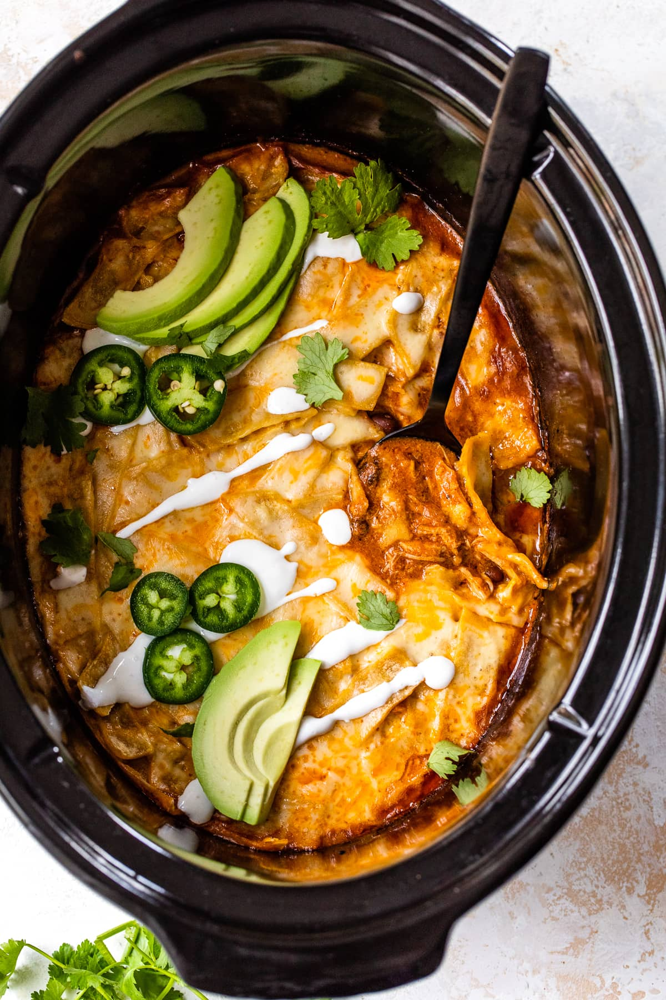

Odin Recipes

Crock Pot Chicken Enchiladas
Chicken Enchiladas are one of my favorite things to make and eat, so naturally, this slow-cooker version hit it out of the park! I adapted it from this chicken enchilada skillet recipe, using boneless, skinless chicken thighs, but you can also use chicken breast. I served it over cilantro lime rice and topped it with avocado and some crema. It was a hit with my family and so easy to make.
Chicken Enchilada Ingredients
- Chicken: Use one pound of boneless, skinless chicken thighs or breasts.
- Onion and Garlic: Chop half of a medium onion and two garlic cloves.
- Seasoning: Ground cumin, kosher salt
- Enchilada Sauce: I prefer making homemade enchilada sauce, but you can also buy it at the supermarket.
- Cream: All you need is a quarter cup of sour cream for a little creaminess.
- Corn Tortillas: Cut four tortillas into strips.
- Black Beans: Rinse and drain one can of low-sodium black beans.
- Cheese: Buy a Mexican cheese blend, Monterey Jack, or mozzarella.
- Garnishes: Sliced jalapeños and chopped fresh cilantro
- Optional Toppings: Sliced avocado, cilantro lime rice, sour cream or crema (Crema generally contains sour cream, lime juice, and salt. I have recipes for roasted poblano crema and avocado crema if you want to try one.)
How To Make Crock Pot Chicken Enchiladas
- Onion and Garlic: I always saute onions and garlic before adding to the slow cooker for the best results. Start by heating the oil in a skillet over medium heat. Add the onion, garlic, cumin, and salt, and sauté while stirring until the onion has softened and browned.
- Put Ingredients in Slow Cooker: Transfer the cooked onions and garlic to the slow cooker and pour in the enchilada sauce, sour cream, and a quarter cup of water. Stir everything to combine and fold in the beans until thoroughly coated. Nestle the chicken into the sauce.
- Slow Cook: Cover the crockpot and cook on high for 3 to 4 hours or low for 6 to 7 hours, until the chicken is tender and shreds easily. Shred the chicken right in the pot with two forks.
- Tortillas And Cheese: Stir in the tortilla strips and top with cheese. Cover the slow cooker and cook for about 30 minutes until the cheese has melted.
- How To Serve: Spoon a cup of the enchilada casserole into your bowl and garnish with cilantro and jalapeños. You can also serve it over rice with sliced avocado and more sour cream or crema.